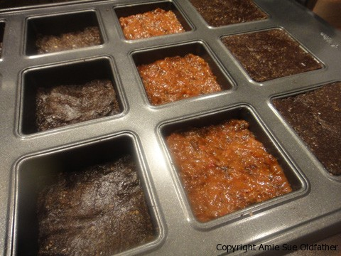
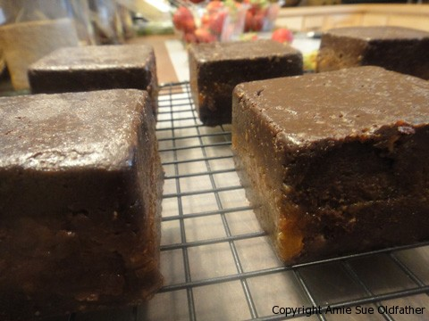
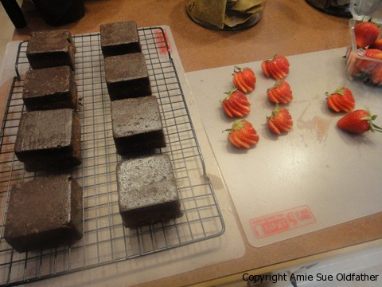
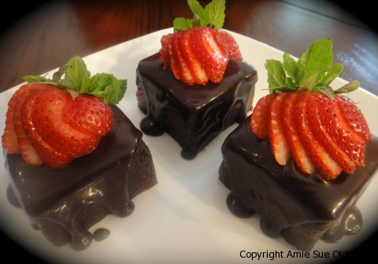
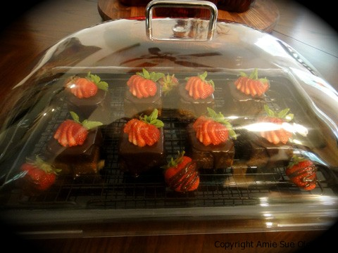

Chocolate Cake with Strawberry Apricot Jam

~ raw, vegan, gluten-free ~
I never get bored with creating raw, gluten-free recipes. You can take one recipe and tweak ever so slightly, creating beautiful masterpieces with a peace of mind.
The base of this recipe was once created as a raw cake. Today, I as I prepared for our annual Fourth of July family picnic, I decided that bring it in a bar form would be much handier.
But to jazz it up even further, I placed a sweet, delicious layer of strawberry apricot jam in the center. You can use any concoction if a fresh fruit combined with dried fruit. Use what you may have on hand or whatever is in season. The reason behind combining a fresh and dried fruit is to marry together the freshness of the fruit, along with the binding, substantial texture of the dried fruit. If you just use fresh fruit, it wouldn’t handle the weight of the cake layer on top.
Feel free to use any pan you want. Square, round, individual sizes, a whole baking sheet… anything will work. Tailer it to your needs and desires. Once again, the beauty of raw recipes. They are just so darn adaptable.
If you do plan on decorating the top with fresh berries, hold them back until you basically ready to serve the dessert. This will prevent them from drying or wilting. Be sure to garnish the treat with whatever fresh fruit you use on the inside. This will help the guests in knowing what flavor profile is yet to come. I hope you enjoy this simple but decadent recipe. Blessings, amie sue
Ingredients:
Cake:
- 3 cups (306 g) raw walnuts, soaked & dehydrated
- 1/8 tsp (<1 g) Himalayan pink salt
- 2/3 cup (55 g) raw cacao powder
- 16 pitted (395 g) moist, Medjool dates
- 1 tsp (5 g) vanilla extract
- 2 tsp (10 g) water
- 1/3 cup (90 g) Chocolate Ganache (below)
Ganache:
- 3/4 cup (237 g) maple syrup
- 3/4 cup (60 g) raw cacao powder
- 1/3 cup (56 g) virgin coconut oil, melted
- 1/8 tsp plus a pinch salt
Strawberry Apricot Jam:
- 1 cup dried apricots
- 1 cup fresh strawberries, diced
Preparation:
Cake:
- Place the walnuts and salt in a food processor fitted with the S-blade and process until finely ground.
- Add the dates and process until the mixture begins to stick together.
- Add the cacao powder and vanilla extract and process until the powder is incorporated.
- Add the water and process briefly.
- Line a 6-inch cake pan with a parchment-paper round (you can use any shape of pan, see below)
- Pour the chocolate mixture into the pan and distribute it evenly.
- Press down firmly and evenly with your hand.
Ganache:
- Place the sweetener, cacao powder, coconut oil and salt in a blender and process until smooth.
- Stop occasionally to scrape down the sides of the blender jar with a rubber spatula.
Jam:
- Blend in the food processor combine the apricots and strawberries until well-mixed. Set aside.
To Assemble:
- You can use any shape pan as you wish. This time I used a pan that made tiny little cakes.
- Place 1/3rd of the batter in the pan.
- Place approximately 1 Tbsp of “jam” and spread to cover the chocolate cake layer.
- Add the remaining chocolate cake “batter” to the top.
- Chill for approx. 1 hour, I made this ahead of time, so it chilled overnight.
- I popped the little square cakes out and poured the frosting over the top, allowing it to drizzle down the sides at its own will. :)
- I garnished it with a fanned strawberry. YUMMMMY!





© AmieSue.com